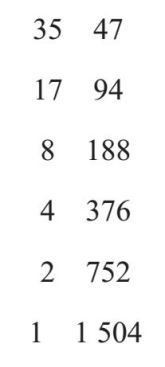
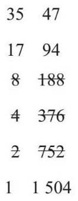
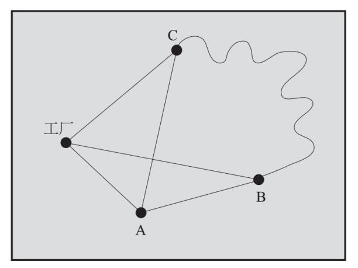
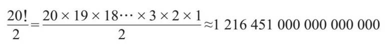

算法与计算机科学密不可分，但算法的起源要比计算机更古老。算法指的是一组指令。你输入一个数字或多个数字，它们将按照一系列程序产生相应的输出。虽然算法不一定都是代数问题，但是因为大多数算法都使用变量作为输入，所以我在这里将做一些介绍。
下面这个例子有时被称为俄罗斯农夫法，但有证据表明，其实这种算法出现的时间更早。如果我想计算35乘以47的值，根据该算法需选取两者中的较小数并减去一半，并舍去余数：
35
17
8
4
2
1
下一步是把较大数每次乘以2再生成一列数。

然后划掉左列为偶数的所有行：

把右列中剩下的数加在一起，就可得出答案：
47+94+1 504=1 645
所以我们知道，35×47=1 645。
太棒了！这种算法在计算两个数字相乘时，只用到了乘以2、除以2和求和，对于不懂得乘法表的俄罗斯农民来说可能是最理想的方法了。这种将复杂的任务分解成一系列简单计算的方法也适用于计算机编程。实际上，大多数程序员都在花费时间教会计算机算法以达到某些结果，比如计算乘法、给列表排序，以及过滤自拍照，让你看起来更年轻。
第一个真正的计算机程序是一个用来计算伯努利数的算法，这个数列很难用手工计算。令人惊奇的是，这个程序在计算机被使用前很久就写出来了。一位非凡的英国女性阿达·洛芙莱斯（Ada Lovelace，1815—1852）在与丈夫查尔斯·巴贝奇（Charles Babbage，1791—1871）一起设计蒸汽动力计算机（分析机）时，写出了这个程序，虽然他们的计算机并没能获得成功。她没把这个机器看作一台纯粹的计算机，而是认为任何可以被数字编码的东西都可以通过它来操作，包括音乐、图片和字母，这是对我们今天所使用的计算机的准确预测。
电子计算机的发明和制造为人类的很多问题节省了大量时间。图灵的“炸弹”计算机就是一个很好的例子。第二次世界大战期间，布莱奇利公园用它来破译由恩尼格玛机加密的纳粹密码。
这里涉及的概念相对简单。恩尼格码机就像一个超级代码轮，如果你在键盘上输入一条信息中的一个字母，机器就会通过三个代码轮（称为转子）传递这个字母，并显示出已加密的版本。其中的诀窍是，每输入一个字母之后转子会变化，这意味着每条消息的每个字母都是用不同的密码加密的。除非你知道每一个转子的初始位置，否则几乎没有希望读取该信息。
图灵的“炸弹”恰恰利用了恩尼格玛系统的唯一缺陷，那就是一个字母永远不会被加密为这个字母本身。“炸弹”会尝试每种组合，以确定转子的起始位置，看看是否会导致字母被加密后不变，从而消除特定的设置。这是一种简单的算法，但由于恩尼格玛机可能的起始位置数量众多，转子的种类也多，再加上会用到其他一些技巧，所以产生了一共1.59×1020 种可能的设置。对于这项任务，计算机可以出色地完成工作，速度比人快很多倍。
今天，正是由这些算法在背后默默支持我们习以为常的系统的运行。当你想从当前位置到达目的地时，计算机会使用一种算法计算出最短（无论是在距离上还是在时间上）的路线，通过一系列计算来优化结果。这种最短路径算法被称为迪杰斯特拉算法，以荷兰计算机科学家艾兹格·迪杰斯特拉（Edsger Dijkstra，1930—2002)的名字命名。你在因特网上发送的所有信息，都会用算法来保证其安全性。当我们用电子表格来给字母或数字排序时，就会用到排序算法。每当你在电话中或互联网上与某人交谈时，傅立叶变换算法都会将声音和图像数字化，这种算法得名自法国人约瑟夫·傅立叶（Joseph Fourier，1768—1830），他在温室效应未被发现的情况下，对振动的数学本质做了大量的研究。网络链接分析是一种使用各种算法在数据之间建立链接的技术。它影响到许多领域，比如搜索引擎选出最适合你的结果，社交媒体的应用程序，广告的展示，营销和医学研究，以及警察整理和交叉对比证据等。
然而，计算机科学家和数学家的工作还没有完成，仍然有一些问题缺乏有效的算法来解决。
将物品从某地高效而廉价地运输到另一地，是现代零售业的基石。尤其是现在，我们越来越多地在网上购买东西，物品会被运到我们的住处。因此，对于零售商来说，如果无法找到装载卡车的最好方法，也无法为司机提供最短的路线，是非常令人恼火的事情。
我们知道，装箱问题就是要找到将已知体积的多个包裹装入给定空间（运货卡车的后部）的最佳方法。这里的问题是，有没有简单一点儿的方法来决定哪个才是最好的方法？最大的优先装还是最小的优先装？还是有其他标准？分析每一种可能的组合，然后选择最好的配制，通常要花费很长的时间来计算。
假设你已以某种合理的方式装车，那接下来如何确定运送所有包裹的最佳路线呢？
爱尔兰数学家威廉·罗恩·哈密顿（William Rowan Hamilton，1805—1865）和英国牧师托马斯·柯克曼（Thomas Kirkman，1806—1895）率先提出了这个问题，这个问题也被称为旅行售货员问题。他们假设有一个售货员需要绕过某些城镇，再以最短的路线回到工厂，而不必再经过任何城镇，如何计算他的最佳路线呢？哈密顿在1857年设计了一个棋盘游戏来说明这个问题，这个游戏叫作顶点游戏（Icosian Game）。时至今日，你仍然可以下载这个游戏的应用程序。

人们很快认识到，现有的算法有时不一定会给出正确的路线。例如，最近邻域算法可以让你到达最近一个未被访问的城镇，但你到达下一个城镇的路程可能就会加长。
在上面的例子中，最近邻域算法将使你从工厂到达A，然后到达B，此时你已别无选择，只能通过漫长而曲折的道路到达C。但其实更合理的路线是：工厂—C—A—B—工厂。
所以，为计算最短路线，应将所有路线都一一列出。在这个例子中，有三个城镇要造访，情况还不算复杂：
工厂—A—B—C—工厂
工厂—A—C—B—工厂
工厂—B—A—C—工厂
工厂—B—C—A—工厂
工厂—C—A—B—工厂
工厂—C—B—A—工厂
仔细看，你会发现某些路线是可逆的，如第一条和最后一条路线，所以我们把这两种情况视为一条路线。如果不考虑方向，上述6条路线可以合并为3条。
为了直接计算路线的数目，可以考虑从工厂出发到城镇，我先是有三条路线可选，然后有两个未到的城镇，接着是一个未到的城镇，最后回到工厂。所以，一共有3×2×1=6条路线可选，但其中有一半是可逆路线。
在数学中，3×2×1可以化简为3！，称为3的阶乘。如上例，我将有3！÷ 2条路线可以选择。而如果我要去20个城镇，那么将有20！÷ 2条路线可以选择：

这个数字与恩格尼玛机上的设置数量大致属于一个数量级。如您所见，阶乘值增长得很快。数学家称这类问题为非确定性多项式问题，即NP问题。用行话来说就是，随着所涉及的事物数量的增加，组合的数量也成倍增长，这就大大增加了需要考虑的组合数量，从而也使计算最优结果的时间加长。
有一些算法可以在合理的时间内给出接近最优结果的答案。这些启发式的算法类似于我们自行查看地图并规划路线的过程：我们可能没有找到最完美的路线，但已经找到的路线可行且花费不了多长时间，所以也是较好的选择。如果你能想出一个有效的算法，即在不检视每一种可能组合的前提下找到最优的解决方案，肯定会有很多公司愿意购买这个算法的。